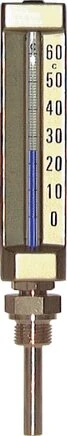

Nhiệt kế thủy tinh công nghiệp (machine glass thermometer / Maschinen-Glasthermometer) WIKA là loại nhiệt kế đọc trực tiếp, kinh tế, dùng phổ biến cho máy móc, đường ống và HVAC. Fast Group Engineering là đại lý cung cấp hàng chính hãng WIKA (Germany) tại Việt Nam.

Gợi ý chọn nhanh
- Cần đọc nhiệt độ tại chỗ hoặc đưa tín hiệu nhiệt về hệ thống.
- Cần chọn bimetal, RTD Pt100, transmitter hoặc thermowell.
- Cần thay thế theo chiều dài thân nhúng và kiểu chân.
- Dải nhiệt, chiều dài stem và đường kính thân.
- Kiểu chân, ren, vật liệu và môi chất.
- 2/3/4-wire, output 4-20 mA hoặc yêu cầu thermowell.
- Danh mục đồng hồ nhiệt độ WIKA.
- Bài bimetal thermometer.
- Bài RTD Pt100 và thermowell.
Tóm tắt nhanh
- Nhiệt kế thủy tinh đo bằng giãn nở chất lỏng trong ống mao dẫn, đọc trực tiếp.
- Kinh tế, không cần nguồn, độ chính xác đủ cho giám sát thông thường.
- Có vỏ/khung bảo vệ kim loại (V-form, thẳng, góc) cho công nghiệp.
- Dùng cho máy móc, đường ống, bồn, HVAC, hệ thống nước nóng.

Nguyên lý & cấu tạo
Chất lỏng chỉ thị (thường là chất lỏng đỏ/xanh, không thủy ngân) giãn nở theo nhiệt độ, dâng trong ống mao dẫn thủy tinh có thang chia. Ống được đặt trong khung kim loại bảo vệ với thang đọc rõ. Có loại thẳng, dạng chữ V, dạng góc để phù hợp hướng lắp và đọc.
Ưu – nhược điểm
| Ưu điểm | Nhược điểm |
|---|---|
| Rẻ, đơn giản | Dễ vỡ (thủy tinh) |
| Không cần nguồn | Không có tín hiệu điện |
| Đọc trực tiếp | Đọc gần, không truyền xa |
| Nhiều dạng lắp | Không dùng cho điều khiển tự động |
So với bimetal & RTD
| Tiêu chí | Glass thermometer | Bimetal | RTD Pt100 |
|---|---|---|---|
| Chi phí | Thấp nhất | Thấp | Cao |
| Độ bền cơ | Dễ vỡ | Bền | Bền |
| Tín hiệu điện | Không | Không | Có |
| Ứng dụng | Đọc trực tiếp | Đọc trực tiếp, bền | Tự động hóa |
Cần bền cơ khí hơn → bimetal; cần tín hiệu điện → RTD Pt100.
Ứng dụng điển hình
- Máy công cụ, hộp số, hệ bôi trơn.
- Đường ống nước nóng, hơi, dầu nhiệt.
- Hệ thống HVAC, chiller, bồn chứa.
- Nơi cần chỉ thị nhiệt tại chỗ chi phí thấp.
Cách chọn (Checklist)
- [ ] Dải nhiệt cần đo.
- [ ] Dạng thân: thẳng / V / góc theo hướng lắp & đọc.
- [ ] Chiều dài que đo & kết nối.
- [ ] Có cần thermowell bảo vệ không (áp lực/rung).
- [ ] Vị trí đọc thuận tiện, tránh va đập (vì thủy tinh).
Các dạng thân: thẳng, chữ V, dạng góc
Chọn dạng thân theo hướng lắp và vị trí đứng đọc:
| Dạng thân | Đặc điểm | Phù hợp |
|---|---|---|
| Thẳng (straight) | Que và thang cùng trục | Lắp đứng, đọc từ trên/ngang |
| Chữ V (135°) | Thang nghiêng cho dễ đọc | Lắp trên đường ống ngang |
| Góc 90° (angle) | Que vuông góc với thang | Vị trí lắp khuất, đọc chính diện |
Chọn đúng dạng thân giúp người vận hành đọc số ngay ở tư thế đứng bình thường, không phải cúi hay nghiêng đầu — chi tiết nhỏ nhưng ảnh hưởng lớn tới sự tiện dụng hằng ngày.
Vì sao nên lắp qua thermowell?
Nhiệt kế thủy tinh có điểm yếu là dễ vỡ và không chịu được áp lực/dòng chảy mạnh nếu cắm trực tiếp. Lắp qua thermowell (ống bảo vệ) giải quyết cả hai: bảo vệ ống thủy tinh khỏi áp và va đập, đồng thời cho phép tháo/thay nhiệt kế mà không phải xả môi chất hay dừng hệ thống. Với đường ống áp lực, hơi nóng hay môi chất ăn mòn, thermowell gần như bắt buộc. Đây cũng là lý do glass thermometer công nghiệp thường được đặt kèm thermowell như một cụm.
Sai lầm thường gặp
- Cắm trực tiếp vào đường áp lực: nguy cơ vỡ ống thủy tinh, rò môi chất; luôn dùng thermowell khi có áp.
- Chọn dạng thân sai hướng đọc: phải cúi/nghiêng để đọc, bất tiện và dễ đọc nhầm.
- Que đo quá ngắn: phần chỉ thị không ngập đủ vào môi chất, số đọc thấp hơn thực tế.
- Lắp nơi va đập/rung mạnh: thủy tinh dễ vỡ; nơi này nên chọn bimetal.
- Chọn dải nhiệt sát nhiệt làm việc: khó đọc chính xác và dễ tràn thang; nên để nhiệt làm việc quanh giữa thang.
FAQ
Nhiệt kế thủy tinh còn dùng thủy ngân không? Đa số hiện dùng chất lỏng thay thế an toàn, không thủy ngân.
Có dùng cho process áp lực được không? Nên đi kèm thermowell để bảo vệ và cho phép thay không xả môi chất.
Đo được đến bao nhiêu độ? Tùy model; phổ biến cho dải công nghiệp thông thường.
Khi nào nên chọn glass thermometer thay vì bimetal?
Khi ưu tiên chi phí thấp nhất và vị trí lắp ít va đập, đọc gần. Nơi rung mạnh hoặc cần độ bền cơ khí cao thì bimetal phù hợp hơn.
Chất lỏng chỉ thị: vì sao không còn dùng thủy ngân
Nhiệt kế công nghiệp hiện đại hầu hết dùng chất lỏng hữu cơ nhuộm màu (đỏ hoặc xanh) thay cho thủy ngân, vì lý do an toàn và môi trường. Chất lỏng thay thế không độc, dễ quan sát trên nền thang, và tránh rủi ro nhiễm độc khi ống vỡ. Về độ chính xác, chất lỏng hữu cơ hoàn toàn đáp ứng nhu cầu giám sát công nghiệp thông thường. Khi đặt hàng, bạn không cần lo về thủy ngân, nhưng vẫn nên nêu dải nhiệt để chọn đúng loại chất lỏng phù hợp khoảng đo.
Xử lý khi ống thủy tinh vỡ
Vì là thủy tinh nên vỡ là rủi ro thực tế ở môi trường công nghiệp. Khi xảy ra, cần thu gom mảnh vỡ cẩn thận, lau sạch chất lỏng chỉ thị (không độc nhưng nên xử lý gọn), và thay nhiệt kế mới. Đây chính là lúc thấy rõ lợi ích của việc lắp qua thermowell: chỉ cần rút phần nhiệt kế ra thay, không phải can thiệp vào đường ống hay dừng process. Với các vị trí quan trọng, nên dự trữ sẵn vài chiếc thay thế cùng cấu hình để không gián đoạn giám sát.
Ví dụ chọn nhanh
Giám sát nhiệt nước nóng trên ống ngang trong hệ HVAC: chọn nhiệt kế thân chữ V hoặc góc để đọc dễ, dải 0…120°C, que 100 mm lắp qua thermowell ren G½. Đo nhiệt dầu bôi trơn hộp số máy công cụ: thân thẳng, dải phù hợp nhiệt dầu, chú ý vị trí tránh va đập. Cùng nguyên tắc: xác định dải nhiệt, hướng đọc, chiều dài que và nhu cầu thermowell, phần còn lại chỉ là chọn kết nối cho khớp process.
Có bản chịu nhiệt cao cho hơi/dầu nhiệt không?
Có, tùy dải model; với nhiệt độ cao nên kết hợp thermowell và chọn dải đo phù hợp để đọc an toàn, chính xác.
Nhiệt kế thủy tinh có cần hiệu chuẩn không?
Với giám sát thông thường thì ít khi bắt buộc, nhưng nếu điểm đo quan trọng, nên đối chiếu định kỳ với thiết bị chuẩn để phát hiện sai lệch.
Cần tư vấn hoặc báo giá nhiệt kế thủy tinh WIKA?
Gửi dải nhiệt, dạng thân, chiều dài, kết nối để nhận báo giá trong 24h.
- Email: minhduc@fastgroup.vn · Zalo: (+84) 938 888 958
Fast Group Engineering – đại lý cung cấp hàng chính hãng WIKA (Germany) tại Việt Nam.
Bài liên quan: [Đồng hồ nhiệt độ bimetal WIKA] · [RTD Pt100 WIKA] · [Thermowell/Schutzrohr]